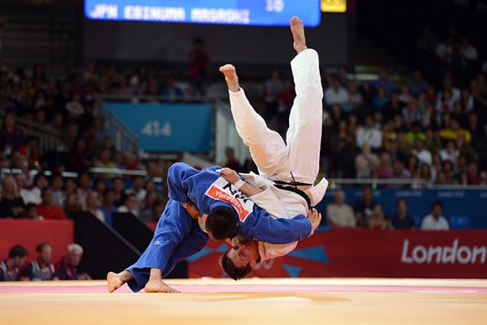

<html>

<head>
    <link rel="stylesheet" type="text/css" href="static/css/aboutJudo.css">
</head>

<body>

</body>
<h1>
    About Judo
</h1>

<div>
    <form>
        <h2>
            What is judo
            <h3>
                Judo is a martiaol art, and olympic sport, that originated from <br>
                Japan in the 19 hundreds. The word Judo translates to "the gentle<br>
                way"as it focuses on using balance, leverage and the opponents <br>
                strength to throw or submit. Judokas, learn a variety of <br>
                techniques ranging from throws, to jointlocks and chokeholds. <br>
                Aside from the physical attributes of Judo, it also promotes <br>
                principles like mutual respect, discipline and self-developement. <br>

                <br><br>
                <div class="img-container">
                    
                </div>
            </h3>
            <br>
            <h2>Judo as a sport</h2>
            <h3>
                Judo is an olympic sport, that has a unique ruleset. The main <br>
                objective of a judo fight is to either throw the opponent on <br>
                their back with or immobilize them through chokes, jointlocks, <br>
                or pins. A perfect throw known as an ippon ends the fight <br>
                immediatly. An ippon will also be granted, if the opponent <br>
                taps out on a submission, or is pinned on his back for 20 <br>
                seconds. lesser techniques are awarded a waza-ri. However <br>
                2 waza-ri equal 1 ippon leading to victory. Certain grips <br>
                and techniques, such as throws in which one grabs the legs <br>
                are illegal. However a new ruleset is introduced every olympic <br>
                cycle. <br>
                <br><br>
            </h3>
            <div class="img_container">
                

            </div>

            <h2>The Judo ranking system</h2>
            <h3>
                The judo rankin system is a system made up of different coloured <br>
                belts. The colour of a belt, reflects the practitioners skill and <br>
                experience. the colour of te belts range from white to yellow, <br>
                orange green, blue, brow and finally black, white being the lowest <br>
                ranked and black being the highest. these ranks are known as kyu, <br>
                each belt being one kyu. When a Judoka reaches the black belt, he <br>
                enters the dan grades. there are 10 dans in total, which are not only <br>
                rewarded for skill, but also for teaching, and contributing to the <br>
                Judo community. <br>

            </h3>
            <div class="img-container">
                

            </div>
        </h2>
        <br><br><br>


</div>
</form>

<a href="index.html">Back to sign in</a>
<br><br><br><br><br>
<footer>
    Created by Thomas Baumann
</footer>

</body>

</html>